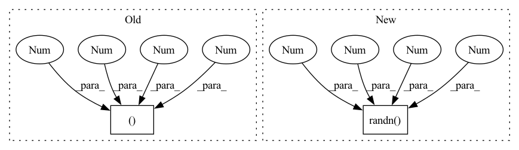

Pattern ID :29066

Before Change
model_name = "out_of_order"
model = OutOfOrderModel()
input_shape = (1, 16, 20, 20)
torch.onnx.export(model, torch.rand(*input_shape), "./data/" + model_name + ".onnx")
onnx_utils.OnnxSaver.set_node_names("./data/" + model_name + ".onnx", model, input_shape)
After Change
model_name = "out_of_order"
model = OutOfOrderModel()
dummy_input = torch.randn(1, 16, 20, 20)
torch.onnx.export(model, dummy_input, "./data/" + model_name + ".onnx")
onnx_utils.OnnxSaver.set_node_names("./data/" + model_name + ".onnx", model, dummy_input)
In pattern: SUPERPATTERN
Frequency: 6
Non-data size: 2
Instances
Fragment ID: 85781560
Project Name: quic/aimet
Commit Name: 1f2711424fe06bce693a1b5c904919b00bb394ad
Time: 2021-01-15
Author: quic_klhsieh@quicinc.com
File Name: TrainingExtensions/torch/test/python/test_onnx_utils.py
M Class Name: TestOnnxUtils
N Class Name: TestOnnxUtils
M Method Name: test_add_pytorch_node_names_to_onnx_ooo(1)
N Method Name: test_add_pytorch_node_names_to_onnx_ooo(1)
M Parent Class: unittest.TestCase
N Parent Class: unittest.TestCase
M File Name: TrainingExtensions/torch/test/python/test_onnx_utils.py
N File Name: TrainingExtensions/torch/test/python/test_onnx_utils.py
M Start Line: 111
M End Line: 113
N Start Line: 111
N End Line: 113
'>
Before Change
templates_seq = torch.randint(0, 21, (2, 2, 16))
templates_mask = torch.ones_like(templates_seq).bool()
templates_dist = torch.randint(0, 37, (2, 2, 16, 16))
distogram = model(
seq,
After Change
msa_mask = torch.ones_like(msa).bool()
templates_seq = torch.randint(0, 21, (2, 2, 16))
templates_coors = torch.randn(2, 2, 16, 3)
templates_mask = torch.ones_like(templates_seq).bool()
distogram = model(
seq,
'>
Fragment ID: 85781548
Project Name: lucidrains/alphafold2
Commit Name: dbcc04f48f6c6a57cfec720cbcaaa61fbcfc7ee6
Time: 2021-02-24
Author: lucidrains@gmail.com
File Name: tests/test_attention.py
M Class Name: AnonimousClass
N Class Name: AnonimousClass
M Method Name: test_templates(0)
N Method Name: test_templates(0)
M Parent Class:
N Parent Class:
M File Name: tests/test_attention.py
N File Name: tests/test_attention.py
M Start Line: 63
M End Line: 63
N Start Line: 62
N End Line: 62
'>
Before Change
model_name = "resnet18"
model = models.resnet18(pretrained=False)
input_shape = (1, 3, 224, 224)
torch.onnx.export(model, torch.rand(*input_shape), "./data/" + model_name + ".onnx")
onnx_utils.OnnxSaver.set_node_names("./data/" + model_name + ".onnx", model, input_shape)
After Change
model_name = "resnet18"
model = models.resnet18(pretrained=False)
dummy_input = torch.randn(1, 3, 224, 224)
torch.onnx.export(model, dummy_input, "./data/" + model_name + ".onnx")
onnx_utils.OnnxSaver.set_node_names("./data/" + model_name + ".onnx", model, dummy_input)
'>
Fragment ID: 85781556
Project Name: quic/aimet
Commit Name: 1f2711424fe06bce693a1b5c904919b00bb394ad
Time: 2021-01-15
Author: quic_klhsieh@quicinc.com
File Name: TrainingExtensions/torch/test/python/test_onnx_utils.py
M Class Name: TestOnnxUtils
N Class Name: TestOnnxUtils
M Method Name: test_add_pytorch_node_names_to_onnx_resnet(1)
N Method Name: test_add_pytorch_node_names_to_onnx_resnet(1)
M Parent Class: unittest.TestCase
N Parent Class: unittest.TestCase
M File Name: TrainingExtensions/torch/test/python/test_onnx_utils.py
N File Name: TrainingExtensions/torch/test/python/test_onnx_utils.py
M Start Line: 90
M End Line: 92
N Start Line: 90
N End Line: 92
'>
Before Change
model.eval()
all_ops = utils.get_ordered_list_of_modules(model, (1, 3, 224, 224))
conv_ops = utils.get_ordered_list_of_conv_modules(model, (1, 3, 224, 224))
self.assertEqual(60, len(all_ops))
self.assertEqual(20, len(conv_ops))
After Change
model = torchvision.models.resnet18(pretrained=False)
model.eval()
dummy_input = torch.randn(1, 3, 224, 224)
all_ops = utils.get_ordered_list_of_modules(model, dummy_input)
conv_ops = utils.get_ordered_list_of_conv_modules(model, dummy_input)
self.assertEqual(60, len(all_ops))
'>
Fragment ID: 85781557
Project Name: quic/aimet
Commit Name: 1f2711424fe06bce693a1b5c904919b00bb394ad
Time: 2021-01-15
Author: quic_klhsieh@quicinc.com
File Name: TrainingExtensions/torch/test/python/test_utils.py
M Class Name: TestTrainingExtensionsUtils
N Class Name: TestTrainingExtensionsUtils
M Method Name: test_get_ordered_ops(1)
N Method Name: test_get_ordered_ops(1)
M Parent Class: unittest.TestCase
N Parent Class: unittest.TestCase
M File Name: TrainingExtensions/torch/test/python/test_utils.py
N File Name: TrainingExtensions/torch/test/python/test_utils.py
M Start Line: 109
M End Line: 110
N Start Line: 109
N End Line: 111
'>
Before Change
def test_onnx_node_name_to_input_output_names_util(self):
test onxx based utility to find mapping between onnx node names and io tensors
model = models.resnet18(pretrained=False)
input_shape = (1, 3, 224, 224)
torch.onnx.export(model, torch.rand(*input_shape), "./data/resnet18.onnx")
onnx_utils.OnnxSaver.set_node_names("./data/resnet18.onnx", model, input_shape)
onnx_model = onnx.load("./data/resnet18.onnx")
After Change
def test_onnx_node_name_to_input_output_names_util(self):
test onxx based utility to find mapping between onnx node names and io tensors
model = models.resnet18(pretrained=False)
dummy_input = torch.randn(1, 3, 224, 224)
torch.onnx.export(model, dummy_input, "./data/resnet18.onnx")
onnx_utils.OnnxSaver.set_node_names("./data/resnet18.onnx", model, dummy_input)
onnx_model = onnx.load("./data/resnet18.onnx")
'>
Fragment ID: 85781559
Project Name: quic/aimet
Commit Name: 1f2711424fe06bce693a1b5c904919b00bb394ad
Time: 2021-01-15
Author: quic_klhsieh@quicinc.com
File Name: TrainingExtensions/torch/test/python/test_onnx_utils.py
M Class Name: TestOnnxUtils
N Class Name: TestOnnxUtils
M Method Name: test_onnx_node_name_to_input_output_names_util(1)
N Method Name: test_onnx_node_name_to_input_output_names_util(1)
M Parent Class: unittest.TestCase
N Parent Class: unittest.TestCase
M File Name: TrainingExtensions/torch/test/python/test_onnx_utils.py
N File Name: TrainingExtensions/torch/test/python/test_onnx_utils.py
M Start Line: 129
M End Line: 130
N Start Line: 129
N End Line: 130
'>
Before Change
from neuralop.models.fno_block import resample
import torch
def test_resample():
a = torch.randn((10,20,40,50))
res_scale = [2,3]
axis = [-2,-1]
After Change
import torch
def test_resample():
a = torch.randn(10, 20, 40, 50)
res_scale = [2, 3]
axis = [-2, -1]
'>
Fragment ID: 85781552
Project Name: neural-operator/fourier_neural_operator
Commit Name: 002e26452829c02047f9eb6f0956921674f52ac2
Time: 2023-03-30
Author: jean.kossaifi@gmail.com
File Name: neuralop/models/tests/test_resample.py
M Class Name: AnonimousClass
N Class Name: AnonimousClass
M Method Name: test_resample(0)
N Method Name: test_resample(0)
M Parent Class:
N Parent Class:
M File Name: neuralop/models/tests/test_resample.py
N File Name: neuralop/models/tests/test_resample.py
M Start Line: 4
M End Line: 4
N Start Line: 5
N End Line: 5